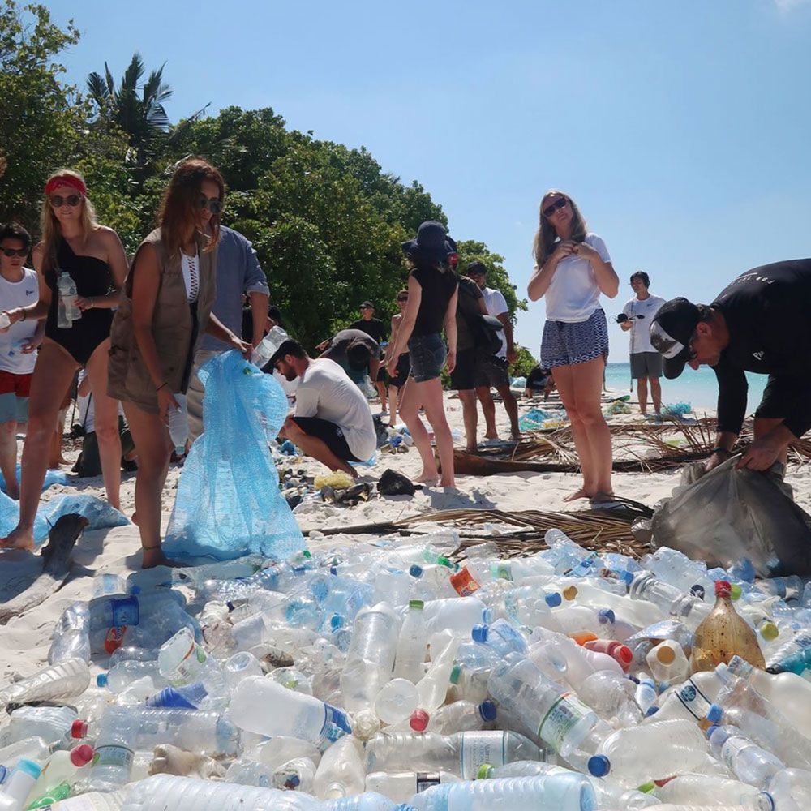
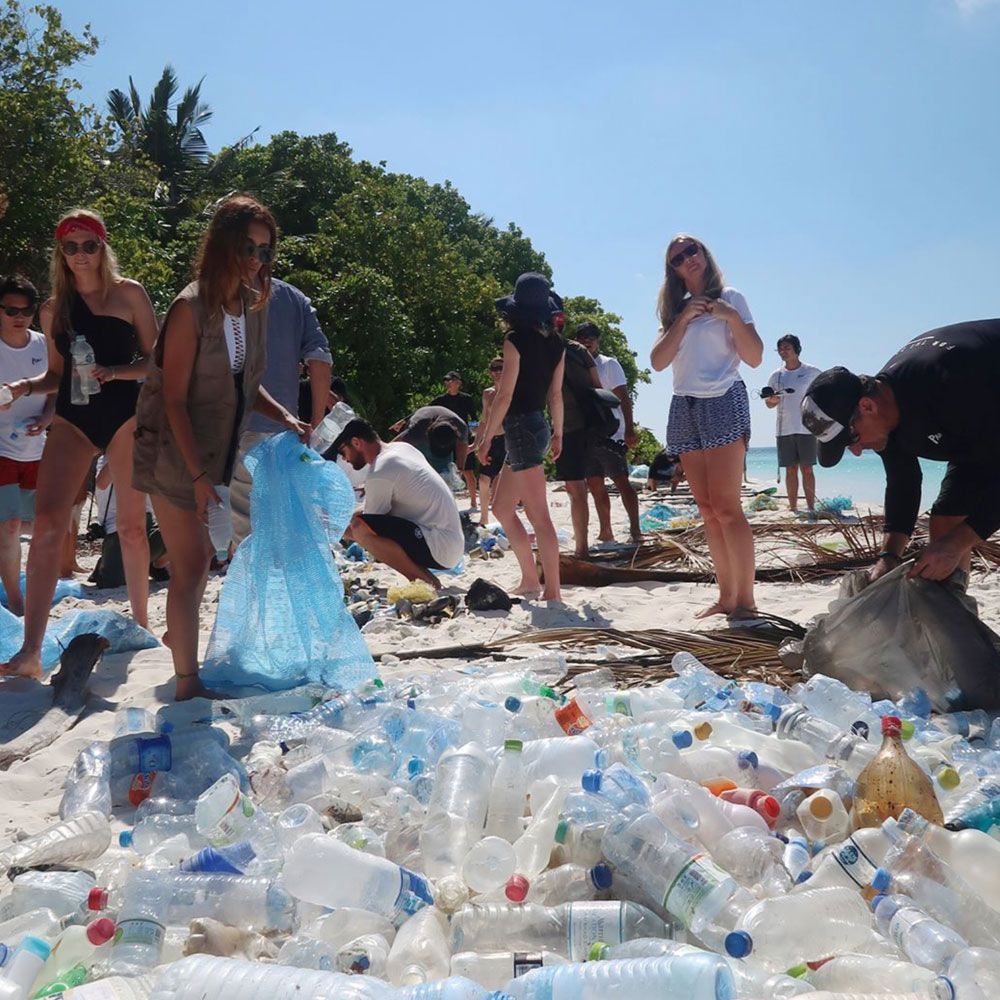

First step is to find the right place to create your workspace. We teach you how to do it in a container (because it is easy to replicate) but it could be made anywhere depending on what's convenient for you.
Plastic waste is our raw material. Setting up an efficient and recurrent collection system is the first step to run a successful recycling workspace. Learn how to get plastic and set up a system that keeps it coming in.
 
Different plastic types have to be separated as they have different melting temperatures and properties. An efficient sorting system is crucial to avoid mixing plastic and ruining your process.
Bigger plastic objects are chopped into smaller flakes using the shredding machine. Shredded plastic is easier to store, wash, melt, sell and use in the other machines or processes.
The shredded plastic should be labeled and stored accordingly to avoid cross contamination and create a material bank for your creations. Try to store your plastic by colours and start using it as your paint!

Once your plastic is ready you can start creating valuable products from plastic waste using our four machines. Each machine is slightly different but work on the same concept: melt, press, cool down.
Through the years we have developed different techniques to create with plastic waste. Products, construction material or art objects- the possibilities are endless. Now it's your turn to take it to the next level.
Surprise us!
Once your products are ready is time to finish, photograph and display your creations beautifully so you can sell your recycled products to people around the world.
From planning to melting & selling your products- we've got you covered!